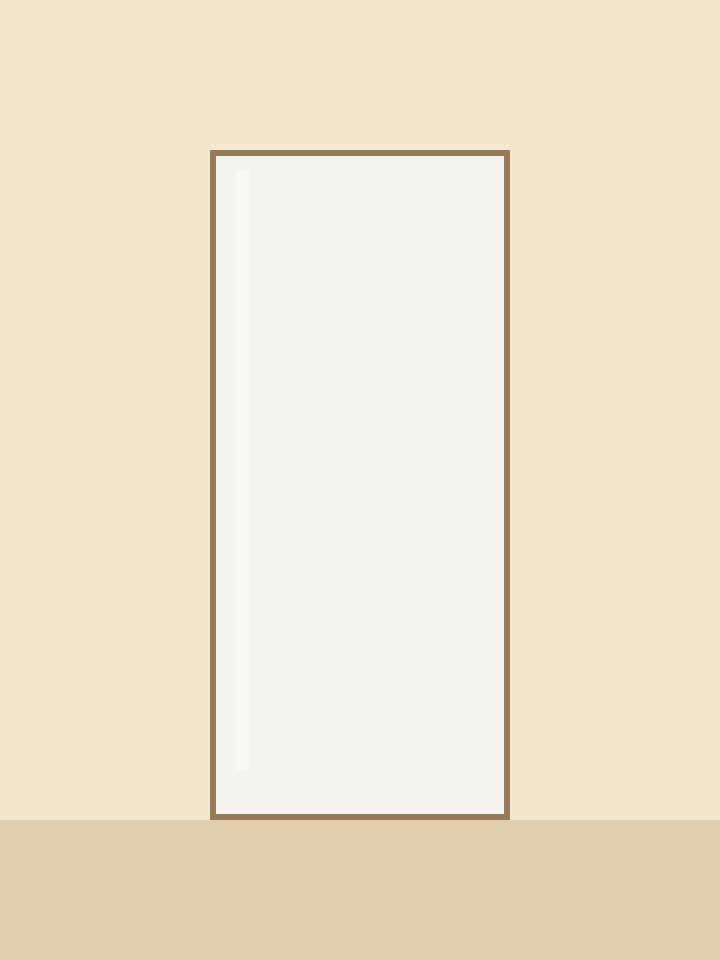

A placeholder cafe page. Scroll down and the latte builds itself, one layer per step, with the options and the price changing beside it.
Scroll to pour.

Step 1 of 4
Straight from the fridge, so the ice lasts and the layers hold.
Step 2 of 4
Step 3 of 4
Content after the sequence scrolls in as normal. The sequence section is only as tall as its scroll track.